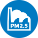

Filtry do oczyszczaczy i nawilżaczy Philips
Jak działają i który pasuje do Twojego urządzenia
Dowiedz się więcejRodzaje filtrów
Zadaniem filtrów jest skuteczne wychwytywanie niepożądanych cząsteczek z powietrza. W oczyszczaczach Philips, by uzyskać powietrze najlepszej jakości, ten proces przebiega w trzech etapach. Zanieczyszczenia usuwane są przez filtr wstępny, węglowy i na końcu filtr NanoProtect HEPA.
Skala obrazująca wielkość cząsteczek w mikrometrach (µm)
PM0,003 µm
PM0,02 µm
Mikroskopijne Cząsteczki
PM0,3 µm
Wirusy
PM1 µm
Bakterie
PM2.5 µm
Smog
Roztocza
Zarodniki pleśni
Pyłki
Sierść zwierząt
Kurz
Lotne związki organiczne
Przykre zapachy
0,003 µm = 0,0000003 cm
Filtr wstępny
Jest odpowiedzialny za wyłapywanie dużych cząsteczek kurzu, włosów i sierści. Można go czyścić i myć. Wyczyść go w momencie, gdy zobaczysz komunikat F0.
Filtr z węglem aktywnym
Usuwa lotne związki organiczne i nieprzyjemne zapachy. Posiada strukturę plastra miodu, dzięki czemu skutecznie oczyszcza powietrze. Duży obszar absorpcji aktywnego węgla odpowiada powierzchni ok. 43 boisk piłkarskich, co zapewnia trwałość do 12 miesięcy.
Filtr NanoProtect HEPA
Wychwytuje do 99,97% cząsteczek, takich jak typowe alergeny, szkodliwe cząsteczki PM2.5 (smog), bakterie i wirusy. Jest zbudowany z wielu stabilnych fałd, które po rozłożeniu pokrywają obszar o powierzchni ok. 2 m2, co zapewnia wydajność przez nawet 24 miesiące.
Filtr 3w1 Nano Protect HEPA
Zintegrowany filtr 3w1 wstępny, Nano Protect HEPA oraz węglowy skutecznie wyłapuje do 99,97%
zanieczyszczeń o wielkości 0,003 mikrona, czyli 800 razy mniejszych od smogu tym PM2,5,
alergeny (pyłki roślin, kurz, sierść zwierząt, alergeny roztoczy, zarodniki pleśni i grzybów), 99,9% bakterii
i wirusów, takich jak H1N1.
Pochłania lotne związki organiczne, formaldehyd oraz nieprzyjemne zapachy, zatrzymując je wewnątrz
mikroskopijnych porów.
Wyposażony w technologię VitaShield jest wykonany z niezwykle gęstej włókniny, co zapewnia jego
długotrwałą i niezmienną skuteczność. Jego powierzchnia jest równa 31 boiskom piłkarskim. Filtr 3w1
wygodnie się użytkuje i posiada długą żywotność, nawet do 3 lat.
Filtry do nawilżaczy powietrza
Zapobiegają uwalnianiu kamienia, bakterii, zarazków i pleśni podczas nawilżania powietrza. Łatwo utrzymać
je w czystości. Wystarczy je wyjąć i przemyć pod bieżącą wodą.
Filtr FY2401/30 należy wymienić
po 6 miesiącach.
Filtr HU4102/01 należy wymienić po 3 miesiącach.
Filtr obrotowy do urządzeń 2w1
Filtr nawilżający NanoCloud przeznaczony do oczyszczaczy Philips z funkcją nawilżania. Jest łatwy do czyszczenia. Wystarczy wyjąć filtr nawilżający wraz z kółkiem, na którym jest umocowany i przepłukać go pod bieżącą wodą. Żywotność do 1 roku.

Dowiedz się, jak wymienić filtry
Wybierz rodzaj urządzenia:
Wybierz model swojego urządzenia
Nie znaleziono wyników
Sprawdź, czy numeru produktu został wpisany poprawnie i spróbuj jeszcze raz.
Jak czyścić filtr wstępny?
Filtr wstępny powinno się czyścić raz na tydzień. Wyjmij go i umyj, gdy na wyświetlaczu pokaże się komunikat F0.
Potwierdzona skuteczność
Kliknij ikonkę i dowiedz się więcej!
Oczyszczacze powietrza Philips posiadają rekomendację Polskiego Towarzystwa Alergologicznego. Każdy rekomendowany oczyszczacz został przebadany w niezależnych ośrodkach alergologicznych. Dzięki temu masz pewność, że polecane przez specjalistów PTA oczyszczacze powietrza Philips są bezpieczne dla alergików.
Produkt bezpieczny – posiada atest Narodowego Instytutu Zdrowia Publicznego - Państwowego Zakładu Higieny.
Fundacja Europejskiego Centrum Badań Alergii (ECARF) na podstawie przeprowadzonych badań klinicznych potwierdza, że oczyszczacze powietrza Philips pomagają łagodzić objawy alergii.*